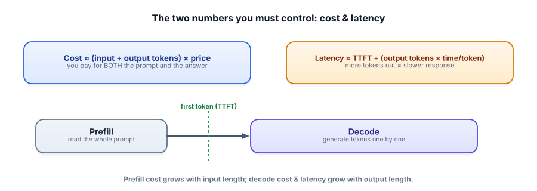

The cost & latency model
A feature that works in a demo can be unaffordable or unbearably slow at scale. To ship for real, you need a mental model of where the dollars and the milliseconds actually go. Both come down to one thing you already understand: tokens.
Cost and latency are both about tokens
Every LLM call has two costs that matter in production: money and time. Both are driven by tokens (Track 1.2). You pay for the tokens going in (your prompt) and the tokens coming out (the answer) — often at different prices. And the response takes time proportional to how many tokens it must read and generate. Model these two numbers and you can predict, budget, and optimize; ignore them and you’ll be surprised by the bill and the lag.

Providers price per token, usually with input tokens cheaper than output tokens. Latency splits into prefill (the model reads your whole prompt — this sets the time to first token, TTFT) and decode (it generates the answer one token at a time — this scales with output length). So a long prompt mainly raises TTFT and input cost; a long answer raises both decode latency and output cost. Output tokens are the expensive ones, on both axes.
Estimate your bill
Set the tokens, prices (use your provider’s — they vary), and traffic. Watch how output tokens and request volume drive the monthly cost.
Cost calculator
Estimate cost from token counts using free tiktoken — do this before launch, not after the invoice.
import tiktoken
enc = tiktoken.get_encoding("cl100k_base")
prompt = system_prompt + retrieved_context + user_question
in_tokens = len(enc.encode(prompt))
out_tokens = 350 # estimate or cap your answer length
PRICE_IN, PRICE_OUT = 0.50, 1.50 # $ per 1M tokens (use YOUR provider's)
cost = (in_tokens * PRICE_IN + out_tokens * PRICE_OUT) / 1_000_000
print(f"~${cost:.5f} per request, ~${cost*20000*30:.0f}/month at 20k/day")This five-line estimate is the single most useful habit in serving: it turns “is this affordable?” from a post-launch panic into a pre-launch number you can design against.
- Cost ≈ (input + output tokens) × price; input and output are usually priced differently (output costs more).
- Latency ≈ TTFT (prefill) + output tokens × time-per-token (decode).
- Output tokens are the expensive ones — on both cost and latency.
- A long prompt raises TTFT/input cost; a long answer raises decode latency/output cost.
- Estimate cost from token counts before launch — and watch how request volume multiplies it.
Your RAG feature stuffs 6,000 tokens of context into every prompt and asks for a 200-token answer. Costs are high and responses feel sluggish before any text appears. What’s the biggest lever, and why?
1. Why does the same model feel slower to “start replying” on a long prompt than a short one, even before any output differs?
2. A teammate halves the output length and is surprised cost barely moved. The prompt is 5,000 tokens, output was 400. Explain.
3. An agent makes 6 LLM calls per task, each re-sending the growing history. What does that do to cost, and what would you check?
▸ Show solutions & reasoning
1. Because of prefill: before generating anything, the model must process the entire prompt, and a longer prompt takes longer to read — raising time-to-first-token. So a long prompt delays the start of the reply independent of how long the reply is. Short prompt → fast first token; long prompt → you wait, then it streams.
2. Because input dominates here. With 5,000 input vs 400 output tokens, the prompt is ~92% of the tokens; even though output is priced higher per token, halving 400 → 200 only removes 200 of ~5,400 tokens. Cost is driven by wherever the tokens actually are — and here that’s the input. To cut this bill, shrink the prompt.
3. It multiplies cost roughly 6× (six calls) and worse, because each call re-sends an ever-larger history, so input tokens balloon across the task — agents are token-hungry. I’d check the total tokens across the whole task (trace it, Track 6), summarize or trim the history between steps, retrieve less, and cap output per step. Agents and RAG make per-call token discipline matter a lot, since the costs compound.
Two facts reshape how you design once you internalize the cost model. First, at scale, small per-call savings are huge: trimming 1,000 tokens off a prompt that runs a million times a day is a million-token-a-day saving, every day. This is why teams obsess over prompt size, caching, and routing — the multipliers are enormous. Second, the expensive features are the compound ones: an agent that loops, or a RAG pipeline that stuffs context, multiplies tokens per task, so a “cheap per call” model can still produce a scary bill. Always estimate cost per task (all the calls), not per call.
This also clarifies the optimization priorities for the rest of this track. To cut cost, your levers are caching (don’t pay twice), routing (don’t use a big model when a small one works), smaller/quantized models, and token budgeting (trim the prompt) — covered next. To cut latency, you stream (for perceived speed), shrink prompts (for TTFT), shorten outputs (for decode time), and pick faster models. And — connecting to Track 6 — you don’t optimize blind: measure cost and latency per request (they’re guardrail metrics on every change), find the actual bottleneck, then apply the lever that targets it. Premature optimization wastes effort; measured optimization is where serving becomes engineering.
The cheapest latency win requires no model change at all — it just changes when the user sees the words. Next: streaming.